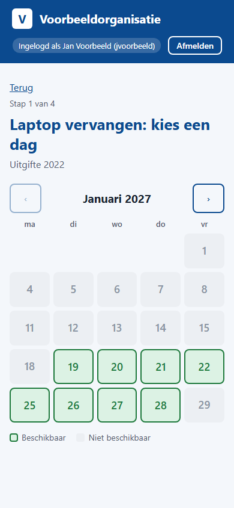

For IT service desks that work by appointment
Appointment booking for IT service desks. Your server, your data.
People book their own slot at the IT service desk: a device replacement, a new starter, a hand-in, or anything that takes more than a quick question. The desk never overbooks, and nothing leaves your network: no cloud, no tracking, no subscription.
Self-hosted on Windows Server with IIS. Free, and to be released as open source. Not a desk-sharing or room-booking tool: it books time with your IT service desk.

The booking flow
Book in four steps
What the person booking sees on a phone. Screenshots with example data; the screens are in Dutch today, an English version is planned.
At the counter
A day at the IT service desk
What desk staff see during the day, from the list of appointments to a cancellation.
Videos
See it in motion
Three short videos without sound, with English captions. They never start by themselves, and each has a transcript below it.
Booking an appointment on a phone
Transcript
- The booking page on a phone shows the services this user may book.
- Pick the service you need.
- Green days have a free slot. Pick a day.
- Only free times are listed. Choose one.
- The time is held for you for a few minutes; the countdown shows how long.
- Confirm. The appointment lands in your calendar with an invitation.
A day at the IT service desk
Transcript
- The day list shows today's appointments, per service.
- Someone arrived: mark them as attended.
- Someone did not come: mark them as not attended.
- The desk can send a fresh invitation to book again.
- An appointment can be cancelled with a reason; the user gets an e-mail.
- Cancelled appointments stay listed below the day, with the reason.
Setting up a service
Transcript
- Administrators add services in the admin portal.
- Give the service a name and a subtitle.
- Choose an icon, or combine two.
- Decide who may book it: here only one organisation.
- Save. Users of that organisation can book it at once.
What it does
Everything an IT service desk needs, from a quiet week to a busy rollout
Your own services
Define what people can book: a device replacement, a new starter, handing in equipment, a longer issue at the desk. Each service has its own duration, instructions, icon and booking period.
Only real slots
People see days with room in green and only the times that are actually free. Opening hours, breaks, a buffer between visits and the number of seats at the counter are all settings.
Capacity that fits the real day
All services share the seats at the counter. Fewer seats on a given date, weekday or half day, closed days, a minimum lead time and a booking window are all settings. Lowering capacity or closing a day with bookings shows you which moments and days are affected before you save.
Change or cancel without calling
People see their own appointment, and can move or cancel it up to a deadline you set per service. One active appointment per person per service.
A hold while you confirm
A chosen slot is held for a few minutes while the person confirms (ten by default), with a countdown on the screen, so two people never book the last seat at the same moment. Booking is checked again on the server.
Calendar and e-mail
Each booking becomes an appointment in the desk's Exchange calendar, with an invitation to the person. Moving or cancelling updates it. A reminder mail goes out a set number of days before, from the desk's own address. Texts are your own templates: the appointment text per service, and one text each for the reminder, the re-invitation and a cancellation by the desk.
Booking never waits for Exchange
A booking is saved first and sent to the calendar afterwards, with retries. If Exchange is down for a while, people can still book, and the desk sees what is still waiting.
Who may book what
Rules per service on organisation and department, with personal exceptions. People who may not book a service do not see it, or see why they cannot.
At the counter
A day overview and a printable PDF with a box to tick on arrival. The desk records who showed up, can invite a no-show to book again with one click, and can cancel an appointment or a whole day with a reason that is mailed to the person. No penalties.
Reports
Week overview with occupancy, progress per service, no-shows and bookings that no longer fit the rules, as PDF with your logo. The next working day's list can be mailed to the desk automatically. A searchable booking list exports to CSV and Excel.
Announcements
A banner at the top of the booking pages for closures and disruptions, with a start and end date and three levels of urgency.
Managed in the browser
Services, rules, texts, dates, mail and sign-in settings live in the admin portal and apply at once. No config files for daily work. Three roles: user, desk staff and administrator.
For administrators
Built to be run by one person, on your own server
One web app, one database file. It runs with no internet access, uses your existing sign-in, and installs with a script that checks itself.
- .NET 10
- IIS
- SQLite
- OpenID Connect
- Exchange Server (EWS)
Install and update with a script
The deploy script sets up the site, the app pool, file permissions and https, can run as a dry run, and ends with a self check. Updates keep a copy of the previous version and the database.
Backups and cleanup
A daily database backup with an integrity check and automatic pruning, and, once you turn it on, a nightly job that deletes or anonymises data past its retention period.
Health and logging
A health endpoint for monitoring and fixed event numbers in the Windows event log, with no personal data in the messages.
An audit log you can search
Every admin and desk action is logged. Filter by period, kind of action and who did it, search the text, and export to CSV or Excel.
Security built in
Strict security headers, CSRF protection, rate limits per person and an IP restriction for administration. Error messages use fixed texts; raw system errors only go to the server log.
Requirements
What you need, and what it does not do yet
You need
- Windows Server with IIS and the .NET 10 Hosting Bundle
- An OpenID Connect sign-in, such as AD FS
- For calendar and mail: Exchange Server on-premises, with a shared mailbox for the desk and a service account
- A TLS certificate for the host name
Not yet
- Exchange Online (Microsoft Graph) is not supported yet
- Microsoft Entra ID should work through OpenID Connect, but has not been tested
- The screens are in Dutch only
- One set of seats for all services; separate groups of seats may come later
- One server; no load-balanced setup
Privacy
Little data, kept for a limited time
Only what is needed
Name, e-mail address, organisation, department and a username, taken from your sign-in. No phone numbers.
Retention you set
Appointments are anonymised after a period you choose, 12 months by default. The audit log has its own period.
A data overview for your privacy officer
A page generated from the code lists every table and column, why it exists, who sees it and how long it is kept. It cannot drift from the real database because a test compares them.
This site
No cookies, no tracking and nothing loaded from elsewhere: the pictures and videos are on this site itself.
Download
Get DeskSlot
Each release is a zip with a checksum file, published on GitHub. Check the checksum on the server before you install.
The release links appear when the project is made public. Licence to be announced.